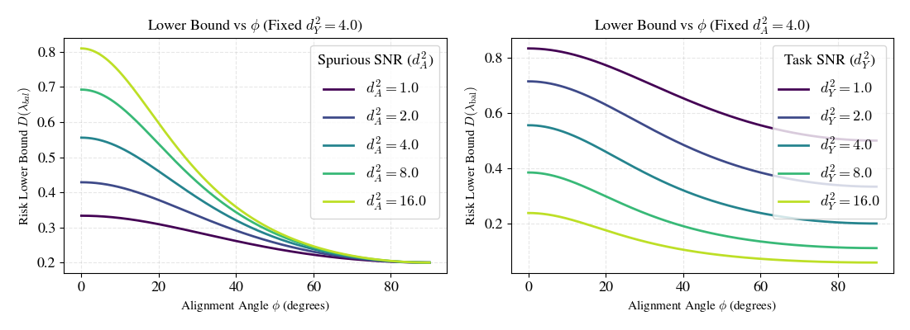
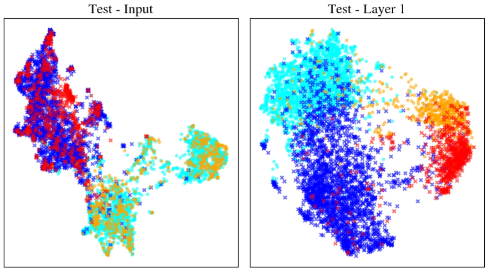
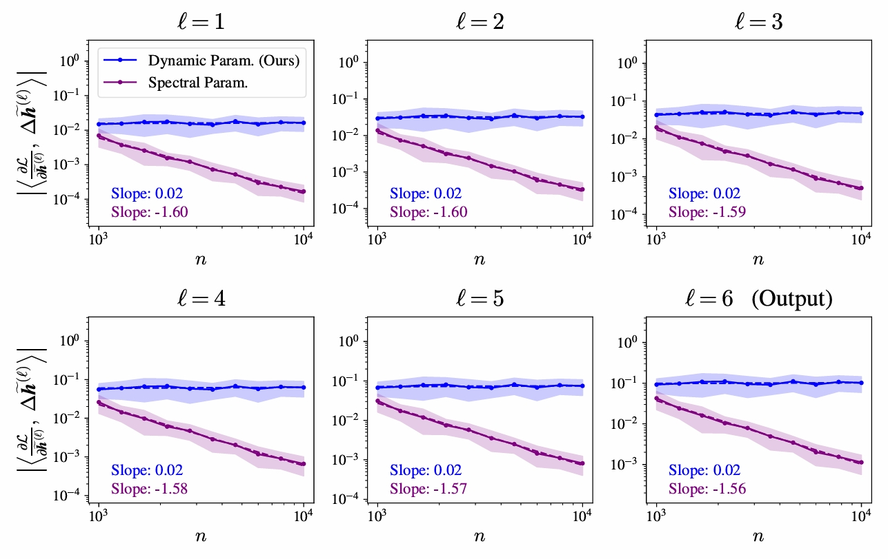
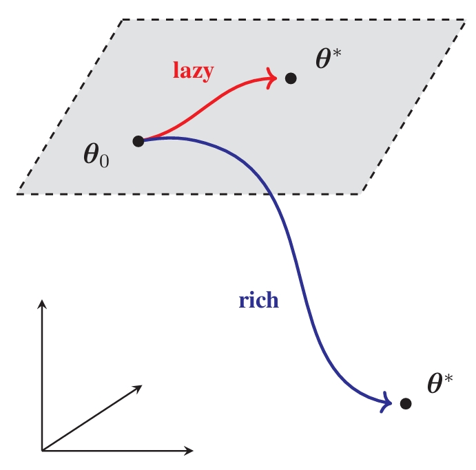

Technical Interests (including topics for future study)
Research
Current Research
Master's Theme
スプリアス相関下における深層ニューラルネットワークの特徴学習の解析
Abstract: Work in progress...


Bachelor Thesis
中間層のニューロン数が層によって異なるオーダーを持つ深層ニューラルネットワークの学習ダイナミクスの解析
Abstract: 層ごとに幅 (ニューロン数) のオーダーが異なる (ボトルネック構造などを持つ) 深層ニューラルネットワークにおいて，学習が安定するための条件を導出． 信号伝播のオーダー評価を行い，中間表現の更新量がネットワーク内の最小の幅に制約されるという規則を特定．これに基づき，初期化・学習率等を動的に調整する手法 Dynamic Parametrization を提案．


Experience
2025.04 - Current
2025 - Current
Research Assistant (K Program)
経済安全保障重要技術育成プログラム (K Program)
LLMのセキュリティ評価・レッドチーミング技術の開発
2025 - Current
Skills & Certifications
Certifications
- 応用情報技術者 [2023.06]
- 基本情報技術者 [2022.06]
- 普通自動車第一種免許 [2021.09]
Technical Skills
GitHub Contributions
View on GitHub
Loading the data just for you.
Recognition
- 2025.03
- 2025.03
- 2024.12
-
2024.09
成績優秀者 給付奨学金 (学部3年次成績)
-
2023.09
成績優秀者 給付奨学金 (学部2年次成績)
-
2022.09
成績優秀者 給付奨学金 (学部1年次成績)
Tools & Utilities
Personal tools and mini-projects I've created.